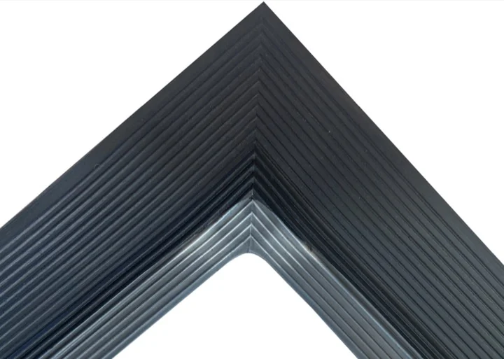
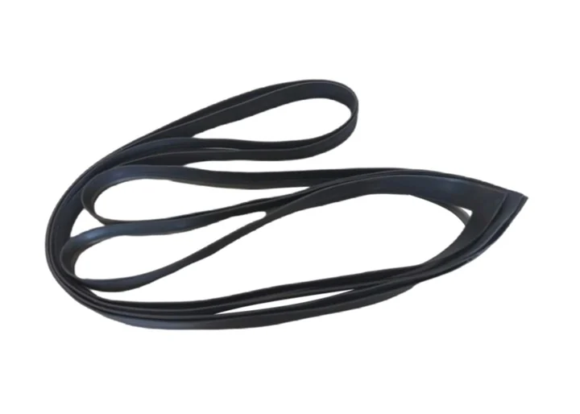
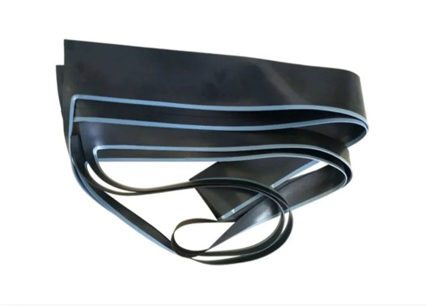
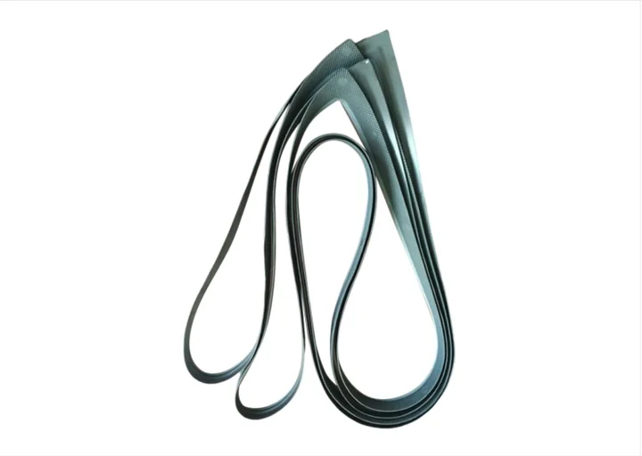
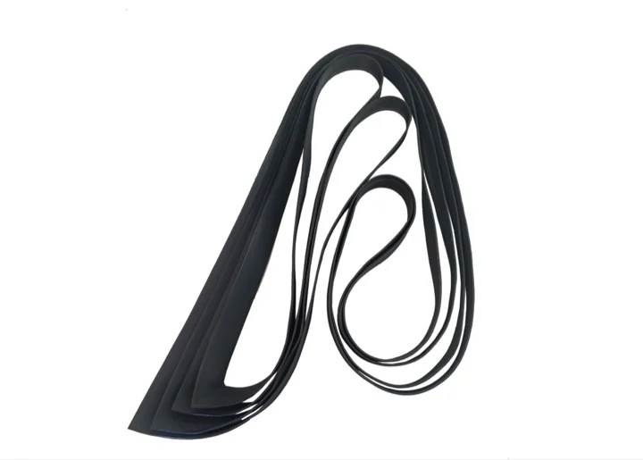
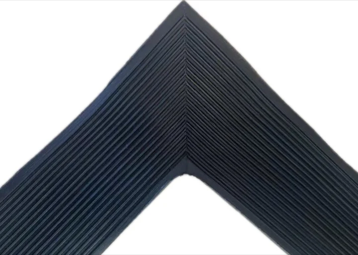

Прымяненне
Выраб для іонна-мембранных электралізераў у хлор-шчолачнай вытворчасці; матэрыял і памеры пацвярджаюцца па чарцяжы, узоры, асяроддзі, тэмпературы, ціску і месцы мантажу.

Прамысловыя ўшчыльненні з гумы і фтарапластыку, Электралізныя ячэйкі і ўшчыльненні.





Электралізныя ячэйкі і ўшчыльненні
| Код вырабу | Па чарцяжы / кодзе праекта |
|---|---|
| Прымяненне | Выраб для іонна-мембранных электралізераў у хлор-шчолачнай вытворчасці; матэрыял і памеры пацвярджаюцца па чарцяжы, узоры, асяроддзі, тэмпературы, ціску і месцы мантажу. |
| Сумяшчальныя электралізеры | DD350, UHDE, INEOS, Asahi Kasei, BlueStar, Chlorine Engineers; пацвярджаецца па чарцяжы і ўмовах службы |
| Матэрыял | EPDM / FKM / NBR / PTFE / PFA / FEP / PVDF; выбіраецца па асяроддзі і рабочых умовах |
| Цвёрдасць | 60-75 Shore A для гумовых дэталяў, калі прымяняльна; пацвярджаецца па чарцяжы і сумесі |
| Рабочая тэмпература | Звычайна ад -40 C да +120 C для гумовых дэталяў; фторпластавыя дэталі залежаць ад выбару матэрыялу |
| Хімічнае асяроддзе | Расол, каўстычная сода, бок хлору і каразійныя хімічныя асяроддзі |
| Памеры | Па чарцяжы, узоры або патрабаванні мадэрнізацыі |
| Абсяг вытворчасці | Новыя электралізёрныя ячэйкі, рамонтныя ўшчыльняльныя дэталі і праекты мадэрнізацыі мембраннага зазору |
| Дакументы якасці | Пратаколы кантролю паводле чарцяжа заказу і пагаднення аб якасці |
Выраб для іонна-мембранных электралізераў у хлор-шчолачнай вытворчасці; матэрыял і памеры пацвярджаюцца па чарцяжы, узоры, асяроддзі, тэмпературы, ціску і месцы мантажу.
Выраб для іонна-мембранных электралізераў у хлор-шчолачнай вытворчасці; матэрыял і памеры пацвярджаюцца па чарцяжы, узоры, асяроддзі, тэмпературы, ціску і месцы мантажу.
Выраб для іонна-мембранных электралізераў у хлор-шчолачнай вытворчасці; матэрыял і памеры пацвярджаюцца па чарцяжы, узоры, асяроддзі, тэмпературы, ціску і месцы мантажу.
Выраб для іонна-мембранных электралізераў у хлор-шчолачнай вытворчасці; матэрыял і памеры пацвярджаюцца па чарцяжы, узоры, асяроддзі, тэмпературы, ціску і месцы мантажу.
Выраб для іонна-мембранных электралізераў у хлор-шчолачнай вытворчасці; матэрыял і памеры пацвярджаюцца па чарцяжы, узоры, асяроддзі, тэмпературы, ціску і месцы мантажу.
Выраб для іонна-мембранных электралізераў у хлор-шчолачнай вытворчасці; матэрыял і памеры пацвярджаюцца па чарцяжы, узоры, асяроддзі, тэмпературы, ціску і месцы мантажу.
Выбраная прадукцыя
Metatecno